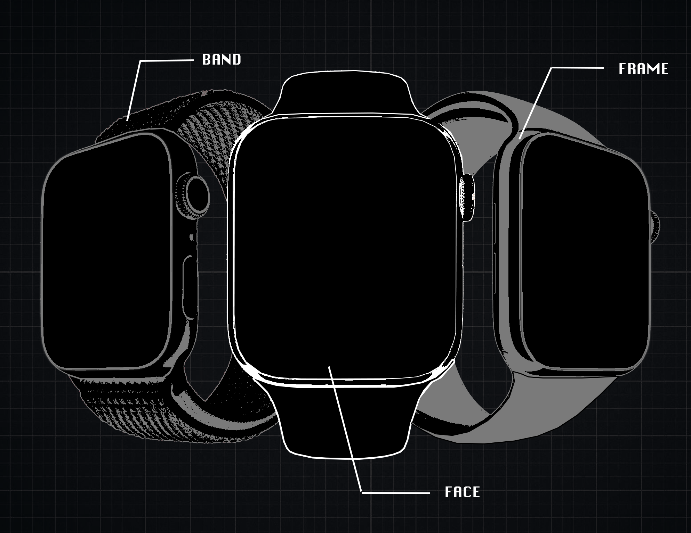

WE ARE a task force service built to protect marginalized identities, centering the black trans woman experience. Black trans women are our most marginalized community, facing physical + sexual violence at an epidemic scale. They receive little support from a movement that has is meant to center the lives of the black community.
Collective liberation requires us to recognize that we are as strong as our most marginalized.
Here's a list of services we provide:
Once someone is accepted into the task force, they will receive secure access to the app. This app will include services that will be on the receiving end of alerts that are described below.
If the user feels that the situation they are currently in is putting them in danger, they can send an alert through the TSAP app that will alert 5 nearby task force drivers in the area to come and driver the user to whatever location is most safe for them.
When the user signs up for the app, they will be given the chance to register an accountability buddy who will be given secured access to the app. If the user enters a situation that they feel may endanger them, they will be able to “check in” when they enter the space, log how much time they plan to be in the space, an option to send their accountability buddy their location and “check out” once they leave. If the allotted time passes and they have not checked out of the space, they will receive three alerts before their accountability buddy is alerted on the app.
These workshops are for Task Force Members and are facilitated by community organizers required by the task force and open to community members with the intention of long term safety for black trans women.
This watch is designed with apps that allow for the user to have services by the task force readily available to them.
For safety purposes, each watch will have a different design and a unique set of combinations of physical aspects.
The data that is collected for those that sign up for the watch will be encrypted and only accessible by local task force members with access to the app.
Physical Features: